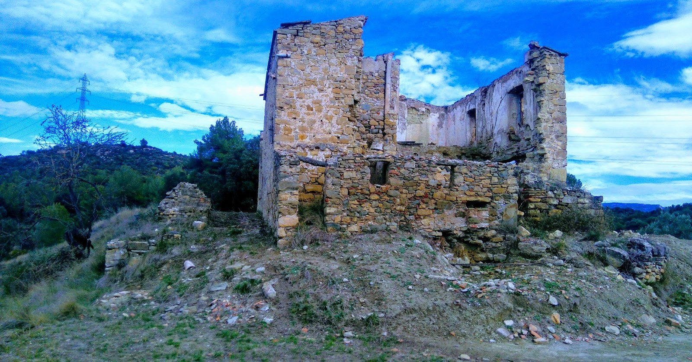
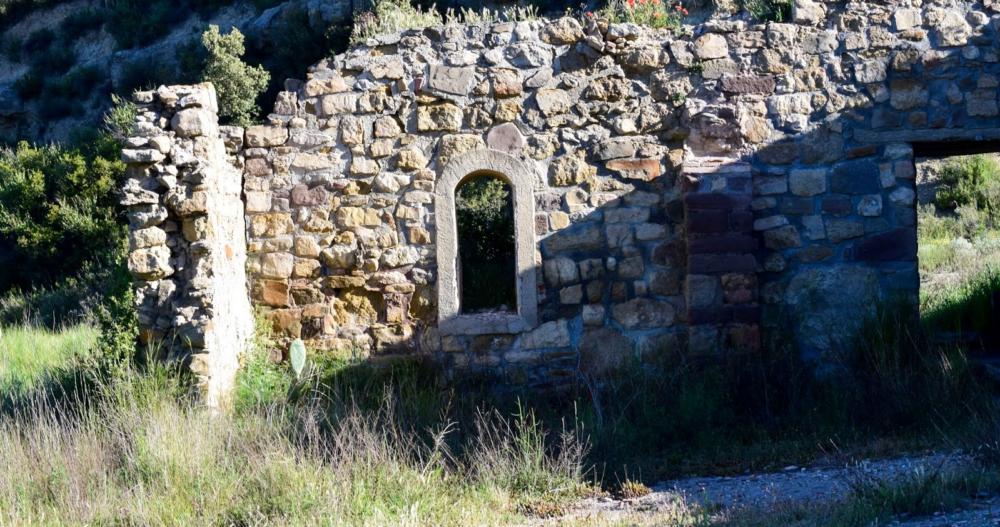
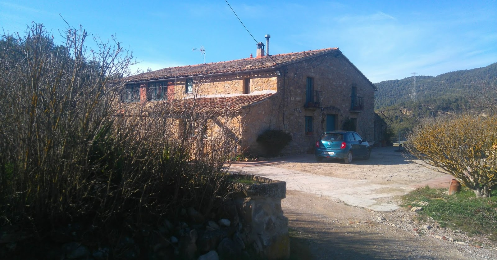

Viladoms de dalt - Castellbell i el Vilar
Origen i història:
L'actual masia de Viladoms de dalt (Castellbell i el Vilar) és un edifici amb orígens medievals, que remonten al s. XIV. Habitat en diferents moments de la història i reconvertit, en cada moment, per donar servei als seus variats habitants.
Avui dia es troba en un estat desolador, abandonat i ruïnós. Forma part d'aquest grup de construccions amb molta història, vida i servei a sobre, però a sobre amb les injustes pedres de la mala sort de la mà. Ha patit diferents espolis, especialment els darrers anys, i la situació de desprotecció del mas, per part dels diferents estaments de govern fa, si més no, potenciar aquesta realitat sense fi. És trist viure el procés de desaparició d'aquesta masia, escoltar i llegir dels que han conegut de la seva esplendor i ara veure la seva decadència.
Tot i això, amb la realitat evident davant dels ulls, aquest mas, encara, sembla lluitar per mantenir la seva dignitat i potencial, envers temps passat. Doncs, anem a buscar gambosins en aquest màgic i preciós espai.
Ubicat a l'est del terme de Castellbell i el vilar i construït sobre la serra d'un turó. Té el privilegi de la perspectiva de la Muntanya de Montserrat per una banda i l'esplanada del Bages i part del Vallés Occidental per l'altre.
El nom original del mas era mas Llevàllol sobirà, que fa constància en un capbreu de 1328. Fou a partir de 1652, que el nou propietari, Pere Viladoms, propiciar el nom que avui dóna raó al mas. Des de llavors esdevingué, mas Viladoms.
En aquest document del s. XIV es citen dos masos Llevàllol: el Jussà i el Sobirà. Per la situació elevada d'aquest mas, donem per assentat que parlem del sobirà. De l'altre mas, que fa constar en aquest capbreu, no hi ha recerca documentada de la seva situació. Podem pensar en el mas de Viladoms de baix com a possible Llevàllol Jussà, que la família Viladoms va comprar a mitjans del s. XVII.
El seguit continua, 1771 amb Joan Gibert, 1822 Josep Sagristà i el seu fill Macià Sagristà i Soler, fins al 1907 que els propietaris marxen a la ciutat i el mas és en mans d'uns masovers, per tal tinguin cura. Va ser en 1950 que és comprat novament. Aquesta vegada per un constructor, Fidel Puig, amb intenció de fer un restaurant i una urbanització al voltant, amb el nom d'El Tirol de Montserrat. El projecte no va fer endavant. Després de treure les teulades, la degradació i el reiterat espoli, accentuat pel petit tresor trobat a la casa veïna de Les Comes, portà a la realitat que trobem actualment. Les parets han estat picades i maltrets per aquests grups de saquejadors que sense cap mirament destruïren parets, sostres i terres.
Estat i actualitat:
L'actual masia de Viladoms de dalt (Castellbell i el Vilar) és un edifici amb orígens medievals, que remonten al s. XIV. Habitat en diferents moments de la història i reconvertit, en cada moment, per donar servei als seus variats habitants.
Avui dia es troba en un estat desolador, abandonat i ruïnós. Forma part d'aquest grup de construccions amb molta història, vida i servei a sobre, però a sobre amb les injustes pedres de la mala sort de la mà. Ha patit diferents espolis, especialment els darrers anys, i la situació de desprotecció del mas, per part dels diferents estaments de govern fa, si més no, potenciar aquesta realitat sense fi. És trist viure el procés de desaparició d'aquesta masia, escoltar i llegir dels que han conegut de la seva esplendor i ara veure la seva decadència.
Tot i això, amb la realitat evident davant dels ulls, aquest mas, encara, sembla lluitar per mantenir la seva dignitat i potencial, envers temps passat. Doncs, anem a buscar gambosins en aquest màgic i preciós espai.
Ubicat a l'est del terme de Castellbell i el vilar i construït sobre la serra d'un turó. Té el privilegi de la perspectiva de la Muntanya de Montserrat per una banda i l'esplanada del Bages i part del Vallés Occidental per l'altre.
El nom original del mas era mas Llevàllol sobirà, que fa constància en un capbreu de 1328. Fou a partir de 1652, que el nou propietari, Pere Viladoms, propiciar el nom que avui dóna raó al mas. Des de llavors esdevingué, mas Viladoms.
En aquest document del s. XIV es citen dos masos Llevàllol: el Jussà i el Sobirà. Per la situació elevada d'aquest mas, donem per assentat que parlem del sobirà. De l'altre mas, que fa constar en aquest capbreu, no hi ha recerca documentada de la seva situació. Podem pensar en el mas de Viladoms de baix com a possible Llevàllol Jussà, que la família Viladoms va comprar a mitjans del s. XVII.
El seguit continua, 1771 amb Joan Gibert, 1822 Josep Sagristà i el seu fill Macià Sagristà i Soler, fins al 1907 que els propietaris marxen a la ciutat i el mas és en mans d'uns masovers, per tal tinguin cura. Va ser en 1950 que és comprat novament. Aquesta vegada per un constructor, Fidel Puig, amb intenció de fer un restaurant i una urbanització al voltant, amb el nom d'El Tirol de Montserrat. El projecte no va fer endavant. Després de treure les teulades, la degradació i el reiterat espoli, accentuat pel petit tresor trobat a la casa veïna de Les Comes, portà a la realitat que trobem actualment. Les parets han estat picades i maltrets per aquests grups de saquejadors que sense cap mirament destruïren parets, sostres i terres.


